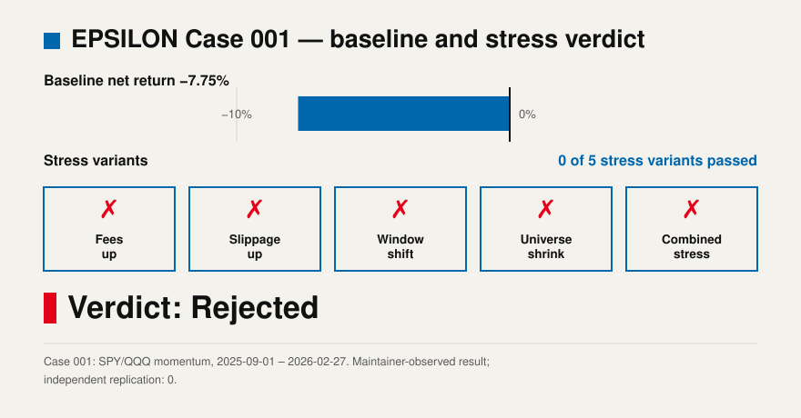
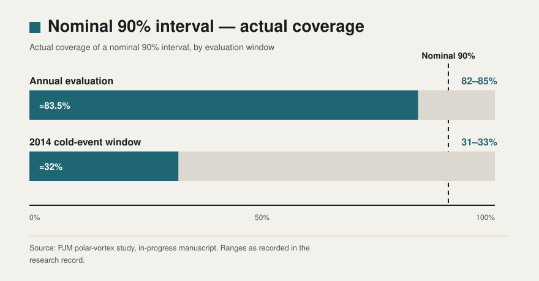
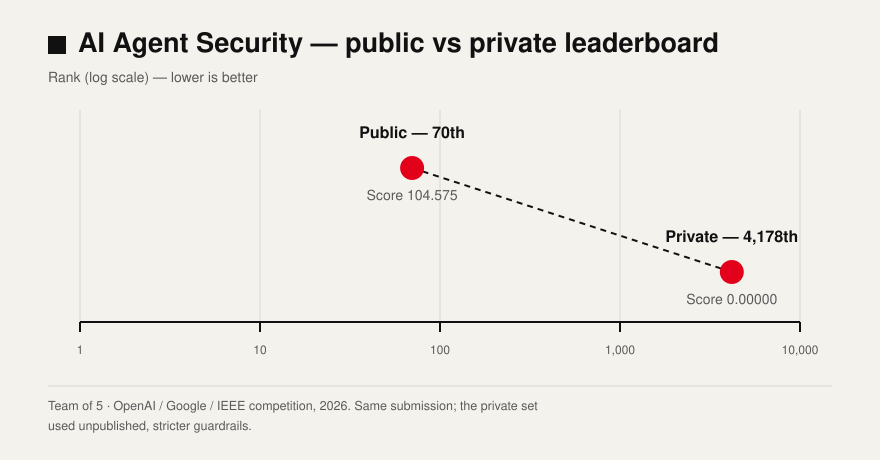

Research · Systems · Evidence
Dresden
Goehner
Building decision systems that make uncertainty visible.
— and audits his own systems first.
Plate 01 — The tail (motif)
- 24merged upstream PRs / 16 repositories
- 115+pilot participants
- 85user responses
- 227★most-starred project
- 57valid survey responses
All figures as of November 5, 2026. Every number on this page links to its evidence.
AI Navigation Glasses
Question
What may a low-cost assistive device say to a blind pedestrian — and what must it never say?
A low-cost navigation research prototype that turns traffic-light and obstacle detection into restrained spoken prompts. Research prototype — not a certified mobility aid, and not a replacement for a cane, guide dog, traffic rules, or the user’s judgment.
Process
Safety redesign built around a confidence gate: low-confidence output never becomes an action instruction, a green light is reported as information and never as authorisation to cross, and repeated prompts are suppressed. Community build-and-explain sessions ran in 4 communities.
My specific contribution
I designed the guidance rules, the confidence gate, and the safety case; I built the demo pipeline and ran the community build sessions.
Status
In progress: confidence calibration is the winter P0. The Bosch result is weak and is published unedited; the shell and guidance demo are not an integrated wearable product.
Links
Metrics
- 211★ / 30 forks (GitHub, 2026-11-05)
- 85 feedback responses collected 2026-08-26 – 2026-11-04 (helpfulness 3.47/5; 9 of 64 users who tried it still use it; 48% reported inaccurate prompts)
- 114 automated test functions
- Bosch traffic-light evaluation: 215 labeled frames, committed-decision coverage 6.6%, including 1 red-read-as-green error — published in full
EPSILON
Question
Which assumption breaks first?
A quantitative evidence instrument: state the claim and the rejection rule in advance, run a baseline plus five perturbations (fees / slippage / window / universe / combined), and export a fingerprinted evidence artifact. The browser demo is deterministic illustrative arithmetic, labelled illustrative on the spot; history mode uses server-side real daily data and does not silently substitute on failure.

My specific contribution
I designed the falsification protocol and built the instrument; Case 001 is my own strategy, rejected by my own rules.
Status
Maintenance and evidence updates since October 2026. The awesome-quant listing (merged 2026-10-19) covers the Assumption Clinic; a listing is not an endorsement.
Links
- Live demo →
browser demo live; history-mode endpoints are scaffolds since the platform migration — see status note - Code →
Metrics
- 227★ / 32 forks (2026-11-05)
- Case 001 baseline −7.75%, stress variants passed 0/5, verdict Rejected
- Assumption Clinic, April 2026: 26 participants, 5 feedback responses
- Independent replications: 0 — stated plainly
- Diamond Challenge 2026, Beijing Pitch Event: Third Prize (regional)
GERT — Grid Extreme Risk Toolkit
Question
Can a grid-risk model be stopped by its own evidence before it reaches a decision-maker?
The Historical Lab is open to the public — 216 ERCOT-native load hours, three windows, recomputable in the browser with an independent checker. Probabilistic forecasting is switched off because the model did not pass its own gate.

My specific contribution
I built the toolkit and the Historical Lab, ran both classroom pilots, and made the promotion decision the gate required: no.
Status
v1.5 is preregistered only (per-quantile recalibration, frozen before any v1.5 data run). No v1.5 result exists yet. Limited: pilot counts are organizer-recorded; the survey sample is self-selected.
Links
Metrics
- 48★ (2026-11-05)
- Pilots (May & September 2026): 115+ participants, 57 valid survey responses, overall 4.33/5, checker usability 3.89/5
- v1.4 candidate: pinball skill +0.76 to +0.84, calibration error Q90 0.035 / Q95 0.044 / Q99 0.032 vs preregistered gate ≤0.03 — rejected by its own gate, not promoted
- 141 backend tests · Release v1.2.0
- TeachEngineering: formally submitted 2026-10-20, under review
The score is not yours
AI Agent Security (OpenAI / Google / IEEE, team of 5): public 70th (104.575) → private 4,178th (0.00000). The private leaderboard used unpublished, stricter guardrails.
Kaggriculture: peak 6th; the same file scored 2896.5 → 1236.4 → 4168.7 across three segments (final standing 2,278 of 10,148). In a local 84-game experiment, changing only the opponents moved the score by about 31%.

A score is a function of the guardrails, the opponents, and the rules — not a property of the code. That is the same lesson EPSILON applies to backtests and GERT applies to its own model.
Open Source
24 merged upstream engineering PRs · 16 repositories — as of 2026-11-05. Selected list; every item links to the pull request itself.
- SALib — #678 · #685 · #686 · #688 · #693 · #694 (×6)
- StatsForecast — #1175 · #1176 · #1241 (×3)
- Fairlearn — #1673 · #1674 (×2)
- pint — #2551
- pandapower — #3291
- NetworkX — #8735
- MAPIE — #953
- NeuralForecast — #1563
- PEFT — #3417
- Dify — #38626
- argo-cd — #29173
- FastStream — #3015
- BeeWare briefcase — #2939
- scikit-lego — #805
- RepoWise — #788
- Trellis AI — #352
awesome-quant #735 — the Assumption Clinic is listed in the awesome-quant directory; a listing, not an endorsement.
Competition Results
| Competition | Result | Detail | Artifact |
|---|---|---|---|
| BMO Round 2 2026 | 27/40 | Distinction, Best in School | Artifact → |
| USAJMO | Qualifier | (record) | Evidence on file |
| AIME 2026 | 14/15 | Qualified | Artifact → |
| Stanford Mathematics Tournament 2026 | Algebra 3rd | Discrete 7th | Algebra → · Discrete → |
| BPhO Round 1 2025–26 | 80/100 | Global Top Gold, Beijing rank 5 | Artifact → |
| SMC 2025 | 120/125 | Gold | Artifact → |
| LSE Economics Challenge 2025 | 97/100 | Top Gold | Artifact → |
| World Scholar’s Cup Beijing 2025 | Overall Champion Scholar | — | Artifact → |
| ACSL 2025–26 Senior | 12/12 | — | Artifact → |
| NYT My List Contest 2025–26 | Top 25% | 970 of 4,004 | Evidence on file |


Organisations
-
Proof to AI
Co-founder. A nonprofit about how math students survive and thrive in the AI era — “AI Generates. You Prove.”
-
AA (Applied Mathematics and AI)
Founder, school club; the EPSILON Assumption Clinic ran under AA in April 2026.
-
TeachEngineering
GERT Historical Lab formally submitted 2026-10-20, under review.
Complete Work Index
- GERTGrid Extreme Risk Toolkit — Historical Lab and gated forecasting. See §03 above.
- PJM Polar-Vortex StudyIn-progress manuscript.
- EPSILONBacktest-assumption instrument. See §02 above.
- AI Navigation GlassesLow-cost assistive navigation research prototype. See §01 above.
- FutureOSDecision operating system; one line in the index, maintained separately.
- the-backtest-that-liedThe signal was real; the strategy was not: IC 0.94 → 0.10.
- NEEExploratory research code, author’s own disclaimer retained.
- Collatz Descent FrameworkDoes not claim a proof.
- 30-project Data Lab13 individual + 17 group; group index 02_Group_Projects.
- AP Physics Tennis-Racket TheoremEvidence on file.
- Polymath SocietyLeadership record; Evidence on file.
- Nexus Club OSPublic concept repo, not deployed.
- Energy InnovationData-strategy internship; Evidence on file.
Profile in One Frame
I work where a claim has to survive contact with evidence. Curiosity becomes useful when it can be shared — written down, checked by someone else, and used to make a better decision than the one I would have made alone.
I build at the seam of mathematics, technology, and people: a navigation prototype that has to respect what it does not know, a backtest instrument whose first rejected strategy was my own, and a grid-risk lab whose model stayed behind its own gate. The tools differ; the discipline does not.
My method is the sentence at the top of this page, repeated in every project: build decision systems that make uncertainty visible — and audit my own systems first. If a number appears here, it links to its evidence; if a result is weak, it is published weak.
One-page CV (PDF) ↓